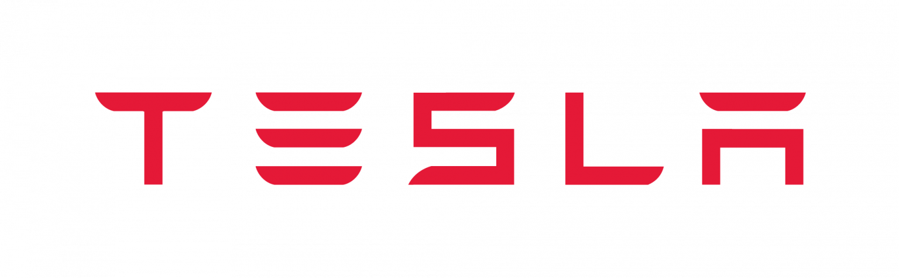
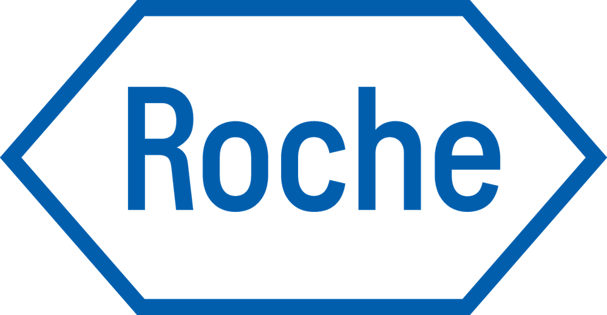
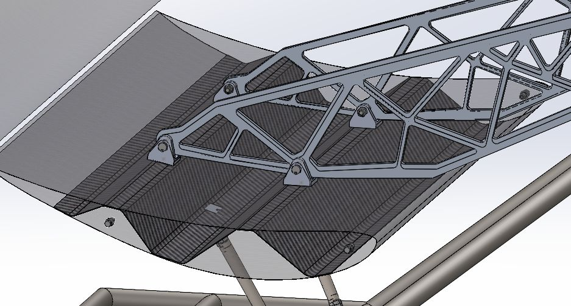
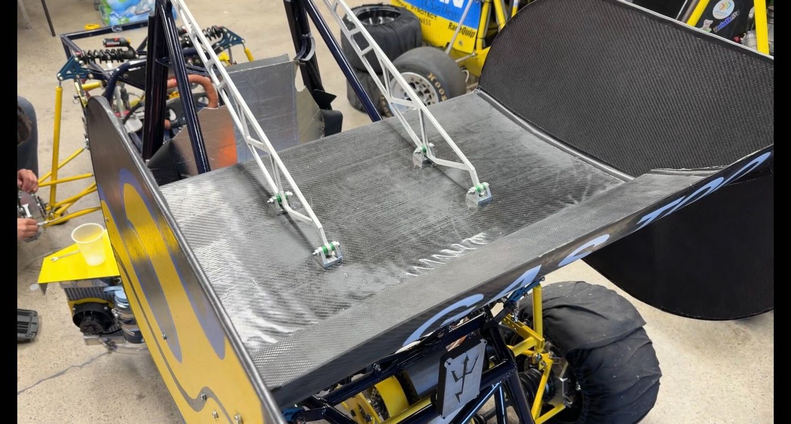
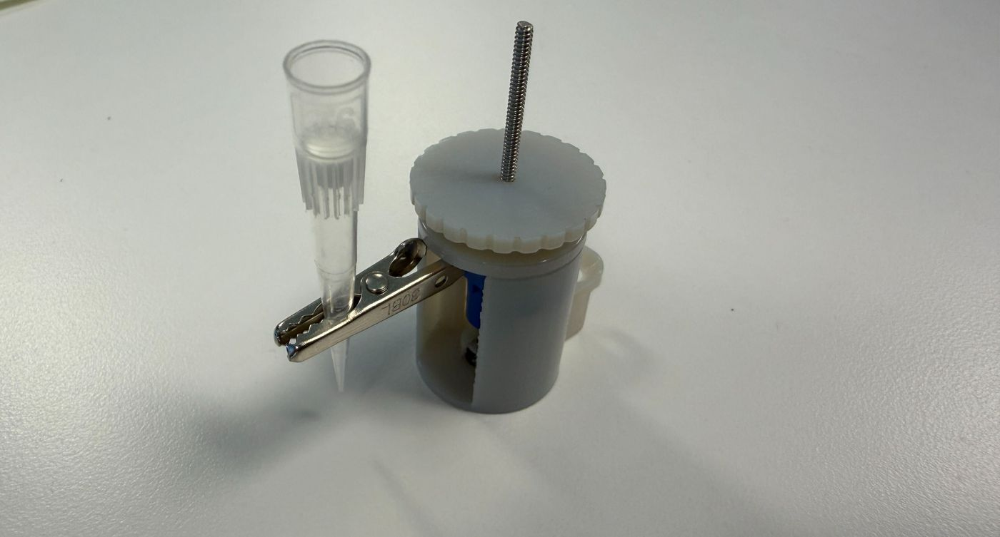
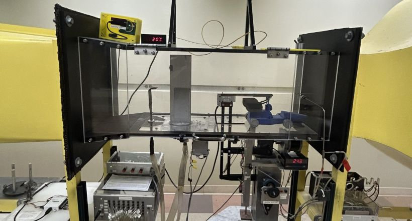

Tooling & Process Engineering Intern, Castings · Tesla
Lathrop, CA
Supporting process improvements, casting-quality investigations, and production operations with Tooling, Process, Production, and Quality teams.

Lathrop, CA
Supporting process improvements, casting-quality investigations, and production operations with Tooling, Process, Production, and Quality teams.

Santa Clara, CA
Ran fluidic and thermal analyses, and designed fixtures and test stands for next-generation sequencing hardware.

San Diego, CA
Owned rear-wing structures from load cases through FEA/CFD, CAM, GD&T, and composite fabrication.

A few projects that show the full loop: analysis, fabrication, and validation.
Roche · CFD & testing
Selected the best of four geometries using a grid-independent CFD model and a PD-pump rig.

Triton Racing · Composites
Designed, analyzed, built, and physically validated a corrugated carbon-fiber rear-wing spar.

Triton Racing · FEA
Optimized and fabricated 6061-T6 swan-neck mounts, then verified the design through hand calculations and structural analysis.

Roche · Mechanical design
Designed a compact, lead-screw fixture to replace an error-prone manual probe-positioning setup.
Triton Racing · CFD
Optimized a two-element front wing in ANSYS Fluent through a verified mesh study and parametric sweep.

Triton Racing · Experimental validation
Tested a 9%-scale 3D-printed wing model to check CFD trends across pitch and flow-speed conditions.
Seeking mechanical engineering internship opportunities from June through September 2027.
devinwong51@gmail.com